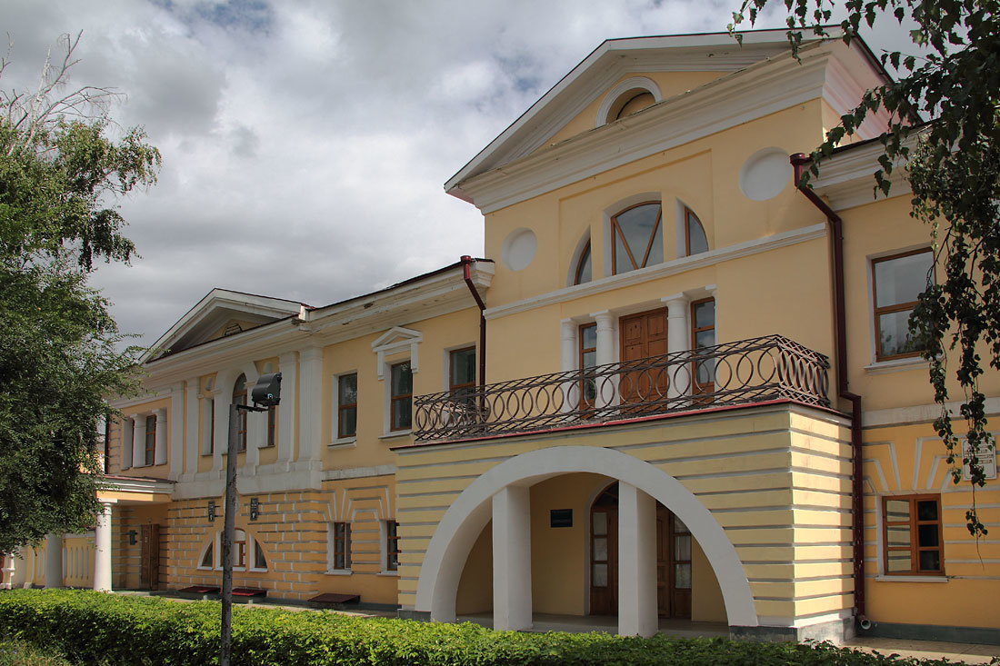
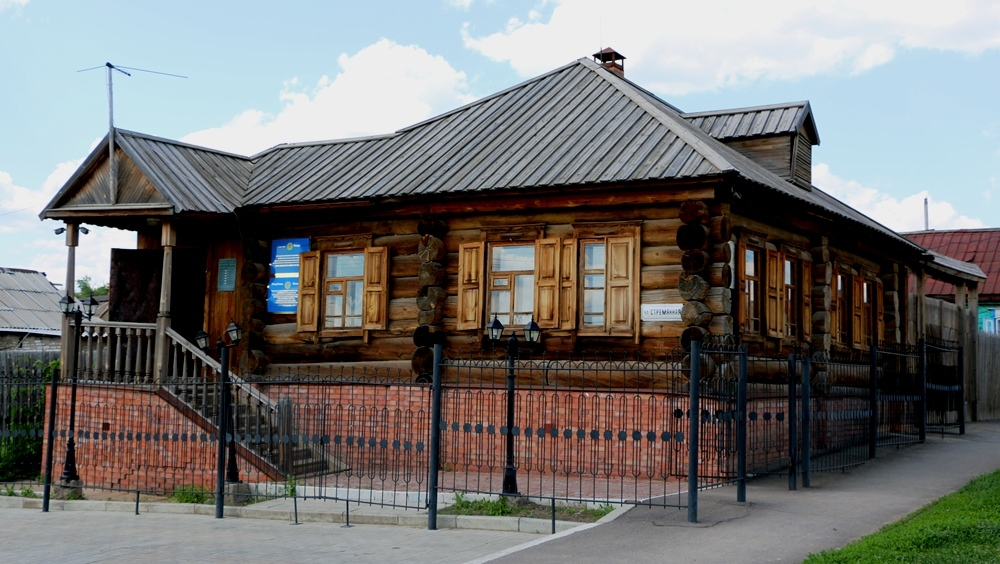
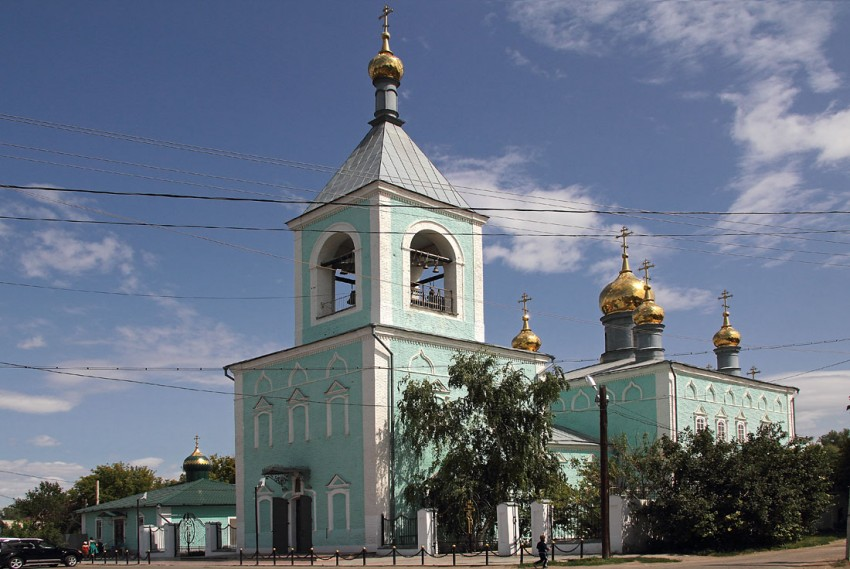
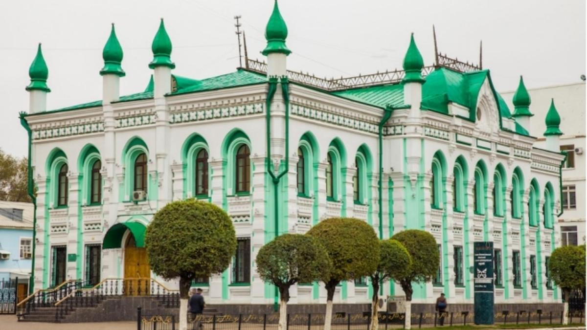
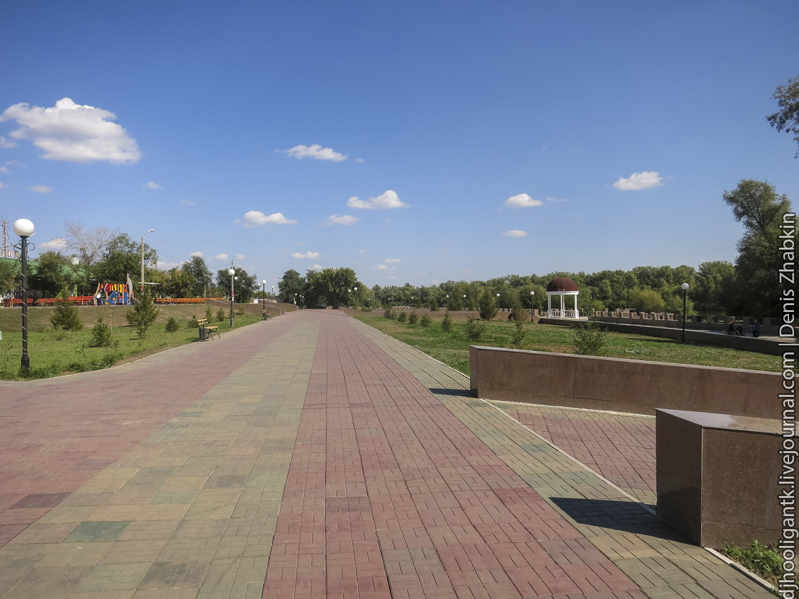

Уральск
Уральск (Орал) – город на западе Казахстана, расположенный на берегу реки Урал (ранее известной как Яик) при впадении в нее реки Чаган. Уральск является административным центром Западно-Казахстанской области. Город имеет стратегическое значение, так как расположен на границе Европы и Азии, при этом исторический центр города традиционно относят к Европе. Это один из старейших городов Казахстана, сохранивший богатую историческую застройку.
Население: около 350 тысяч человек.
Основан: В 1613 году как Яицкий городок.
История
Уральск был основан русскими казаками в 1613 году под названием Яицкий городок. Город играл важную роль в истории региона и был одним из центров крупного восстания под предводительством Емельяна Пугачева в 1773–1775 годах. После подавления восстания, по указу Екатерины II, река Яик была переименована в Урал, а Яицкий городок — в Уральск, чтобы стереть память о бунте. В XIX и начале XX века Уральск был крупным торговым центром на перекрестке путей, связывающих европейскую часть России с Центральной Азией. В советский период город стал важным промышленным и культурным центром региона.
Достопримечательности
-

Музей А. С. Пушкина: Посвящен пребыванию великого русского поэта в Уральске во время сбора материалов о Пугачевском восстании.
-

Дом-музей Е. И. Пугачева: Историческое здание, связанное с событиями восстания.
-

Собор Архангела Михаила: Старейший каменный храм города, построенный в XVIII веке, является важным архитектурным памятником.
-

Уральский историко-краеведческий музей: Представляет богатую экспозицию по истории, этнографии и природе Западно-Казахстанской области.
-

Набережная реки Урал: Популярное место для прогулок и отдыха, где можно увидеть границу между двумя континентами.
Культура
Культура Уральска является уникальным сплавом восточных и европейских традиций, что обусловлено его географическим положением. В городе сохранилось большое количество архитектурных памятников, отражающих его казачье прошлое и роль как пограничного торгового центра. Уральск известен своим театральным искусством, а также сохранением традиций как русской, так и казахской культуры.
Интересные факты
- Река Урал в черте города является общепризнанной географической границей между Европой и Азией.
- Уральск — один из немногих городов Казахстана, где сохранилось большое количество зданий дореволюционной постройки.
- Город упоминается в повести А. С. Пушкина «Капитанская дочка» и его историческом исследовании «История Пугачева».
- Регион является важным центром нефтегазовой промышленности Казахстана.